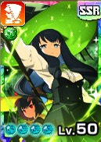
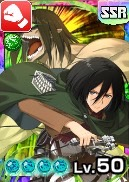
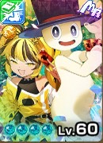
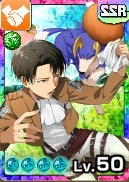

ヒュプノス
 秋限定
秋限定
ヒュプノス
緑オーラ
怪物
秋限定
主血統アローヘッド
副血統レアモン
基礎データ
素質
ライフ0%
ちから0%
かしこさ+10%
命中+5%
回避-5%
丈夫さ+10%
- 素質合計
- +20%
- 最高素質
- かしこさ +10%・丈夫さ +10%
特徴
ガッツ回復力C
移動速度B
成長タイプ早熟
ヨイワルややワル
サイズふつう
適性データ
地形適性
砂漠C
森林C
海岸C
雪山D
火山E
- 得意（B以上）
- なし
- 苦手（D以下）
- 雪山D・火山E
間合い適性
遠B
中E
近C
零C
- 得意（B以上）
- 遠B
- 苦手（D以下）
- 中E
適性評価は当サイト独自の指標です。B以上は育成でSに届く適性、D以下はSに届きにくい適性として、高いランクを少し重く見て5.0満点で算出しています。
相性のいいアシスト能力
ヒュプノスはかしこさの素質が高い（+10%）ので、攻撃ステを上げる俺が仕留める IIを活かしやすい。回避の素質-5%がヒュプノスの弱点。ルピナスリカバー IIでカバーしよう。
-
デコレートマジック II
[怪物]オーラ技命中時、次の効果
[業物Lv5]
与ガッツダメージ分ガッツ吸収<消費ガッツ50%まで>
[有利]クリティカル時、ガッツダメ<+30%> -
ルピナスリカバー II
[自身緑または獣族]バトル開始時、回避ステ<+400>、技回避時、次の効果
[前半]ガッツ回復<+30><1回>
[後半]ガッツ回復<+40><1回> - ▲ 回避の素質は-5%と低めで、この能力で回避を補える。
-
夜空を舞う夢 II
[自身緑]<オーラ>技発動時、自身に[怒]を<1>スタック
[怒]のスタックが<3>になる時、<2>消費して必中Lv1かつクリティカル確定 -
オフリアボイド II
[怪物]<相手オーラ>技発動時、完全回避Lv2<1回>
さらに、被ダメブロックLv2<20秒><1回> -
俺が仕留める II
[自身緑]<オーラ緑>技発動時、発動技と次の技が必中Lv1
さらにクリティカル発生時、攻撃ステータス10%上昇<1回> - ▲ かしこさの素質+10%は、攻撃ステを上げるこの能力と好相性。
※新しいカードの能力から並べています。
評価解説
- アロへかどうかすら怪しい見た目だがカッコイイので無問題
- G回復速度はアロへ種の中でもトップクラス
- スプーキーとのシナジーが凄まじく、特に近距離の専用技「回転突爆・毒」とトリックコンフューズの相性が抜群。技自体の出が早く、連発で繰り出すだけで相手のライフを削りきれる性能。ぶっちゃけ遠距離のランク5技より使い勝手が良い。
- 対獣の場合、乱心耐性がついている個体もいるため過信は禁物。
おすすめ編成
おすすめ編成① 火力盛り乱心ばら撒き型
スプーキー

アイリス(ライバル)

ミカサ
ブライド

オフリィ
レンタル
ドルチェ
おすすめ編成2 乱心必中型
スプーキー
アイリス(ライバル)

リヴァイ
ブライド
オフリィ
レンタル
ドルチェ